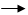

Agregar linhas
Agregar linhas
O caminho para essa janela é: Dados  Agregar linhas.
Figura 1. Janela "Agregar linhas".
Para criar um novo objeto de dados, agregado, a janela utilizada é apresentada na Figura 1. A primeira informação que deve ser indicada se refere ao objeto de dados que será utilizado. Deve-se lembrar que para isso, o objeto de dados deverá ter sido previamente aberto no Epi-R (detalhes sobre como abrir dados ou importar dados via ODBC).
Para utilizar apenas algumas linhas do objeto de dados selecionado, escreva a seleção desejada no campo "Filtro", seguindo os padrões de seleção de linhas do R, ou clique no botão ao lado desse campo. Para maiores informaçoes sobre o preenchimento da janela auxiliar "Selecionar linhas", clique aqui.
Todos os outros campos são de preenchimento obrigatório e a orientação para seu preenchimento é apresentada a seguir:
Variável de análise: Selecione a variável que deseja aplicar a função de agregação.
Função: Selecione o tipo de informação que deseja obter quando a agregação for realizada. O Epi-R dispõe de três funções, a média das observações selecionadas, a soma dos valores dessas observações ou a frequência (contagem) delas.
Variáveis de agregação: Selecione a(s) variável(is) a partir das quais os extratos serão construídos.
Salvar como: Digite o nome desejado para armazenar o resultado da agregação.
Depois de selecionar todas as opções desejadas, basta clicar em "Executar". Para construir sucessivos objetos usando essa janela, marque a opção "Manter essa janela aberta para outra operação". Com isso, o objeto será criado, o resultado será apresentado no campo "Saída de resultados" da janela principal e seu nome aparecerá no campo "Objetos" da tela principal do Epi-R, mas essa janela não será fechada, evitando o retrabalho de acessá-la.